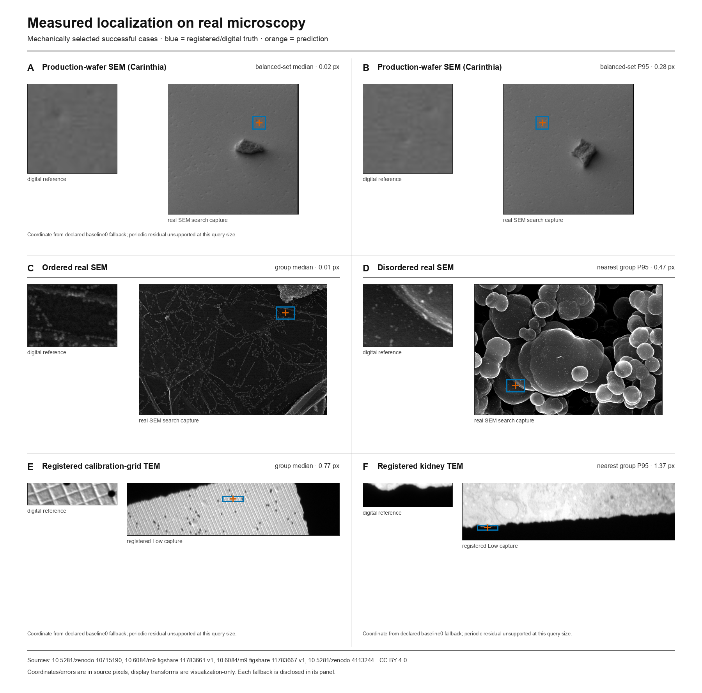
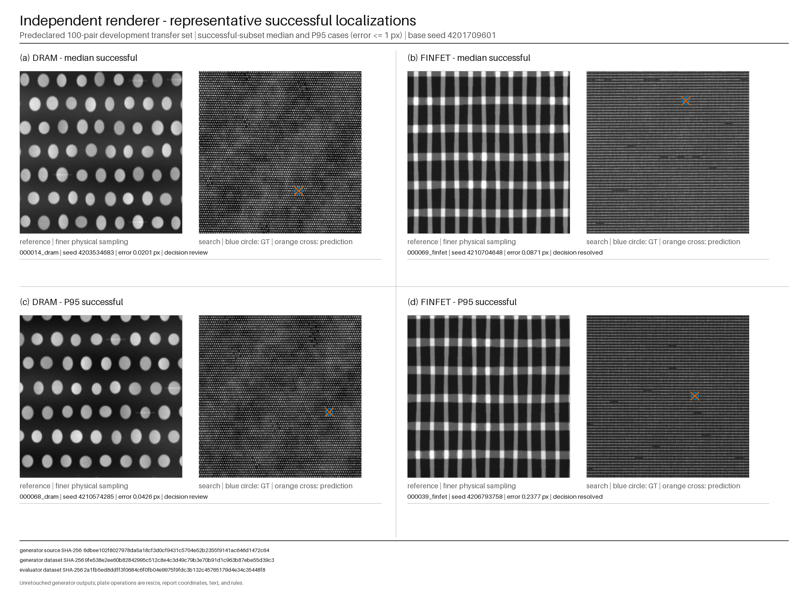

Periodic inspection / absolute position
The right pattern is not always the right site.
Metralign locates a finer-sampled reference inside a wider-field search and returns one subpixel coordinate. It is deterministic, training-free, and CPU-only.
- Frozen synthetic pairs
- 1,400
- Within 1 px
- 99.8571%
- Median error
- 0.083 px
- Mean localize wall
- 239 ms

Measured record
Separate claims, separate denominators.
The sealed synthetic result is the release claim. Acquired microscopy and the standalone renderer are development checks and are never pooled into it.
| Evidence | Scope | Observed |
|---|---|---|
| Frozen synthetic | 1,400 / seven suites | 1,398 ≤1 px · median 0.083 px |
| Standalone renderer | 100 predeclared development pairs | 97 / 100 within 1 px · median 0.044 px |
| Carinthia wafer SEM | 24 same-acquisition crops | 23 ≤1 px · 13 / 24 fallback |
| Boiko FE-SEM | 30 same-acquisition crops | 29 ≤1 px · 0 / 30 fallback |
| Registered MiniTEM | 70 publisher-registered pairs | 43 ≤1 px · 70 / 70 fallback |
Method
Use the lattice twice.
- 01
Measure it
Estimate scale, rotation, and pitch from reciprocal and phase structure.
- 02
Cancel it
Apply matched one-period differences to suppress the repeated backbone.
- 03
Resolve one site
Rank residual evidence, retain bounded alternatives, and expose absolute-site ambiguity.
External comparison
Generic registration often finds the wrong period.
All-sample success on the same frozen image bytes; unresolved estimates count as failures.
| Method | Coverage | Within 1 px |
|---|---|---|
| Metralign | 100.00% | 99.86% |
| Official XFeat* + USAC_MAGSAC | 77.07% | 0.00% |
| OpenCV scale/rotation grid | 100.00% | 35.57% |
| OpenCV template + phase | 100.00% | 32.57% |
| scikit-image template + phase | 100.00% | 32.14% |
| OpenCV ECC affine | 80.71% | 30.36% |
Fixed adapters; not a claim of optimal tuning for each library. The XFeat row is a retrospective development task-mismatch control, not a verdict on its intended correspondence benchmarks. Timings and complete per-sample records live in the repository.

Open record
Run the coordinate. Inspect the reasons.
metralign --reference reference.png --search search.png --diagnosticsThe default stdout contract is exactly two numbers. Diagnostics report transform evidence, candidate hypotheses, decision support, fallbacks, and review recommendations on stderr.